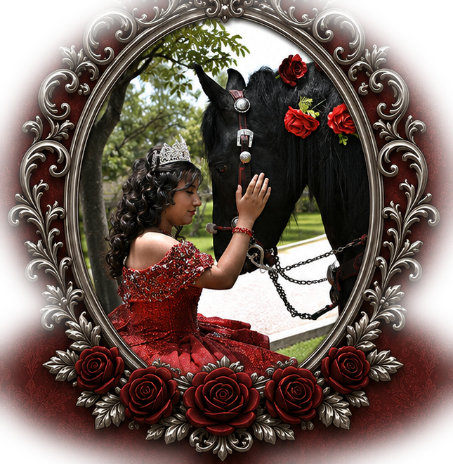
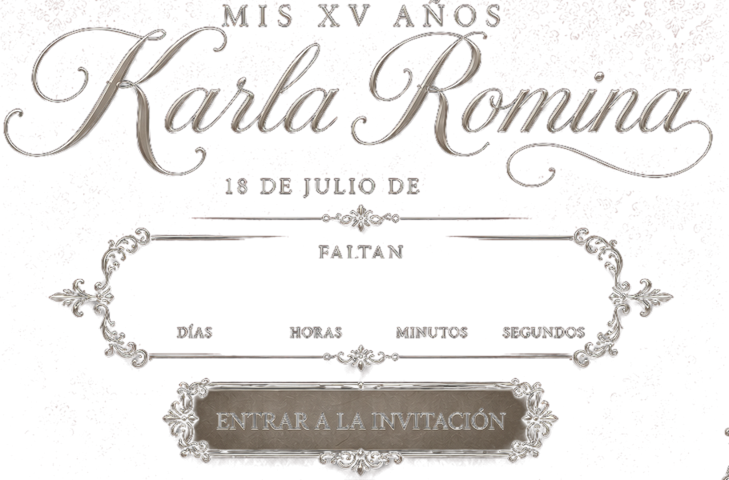
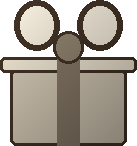
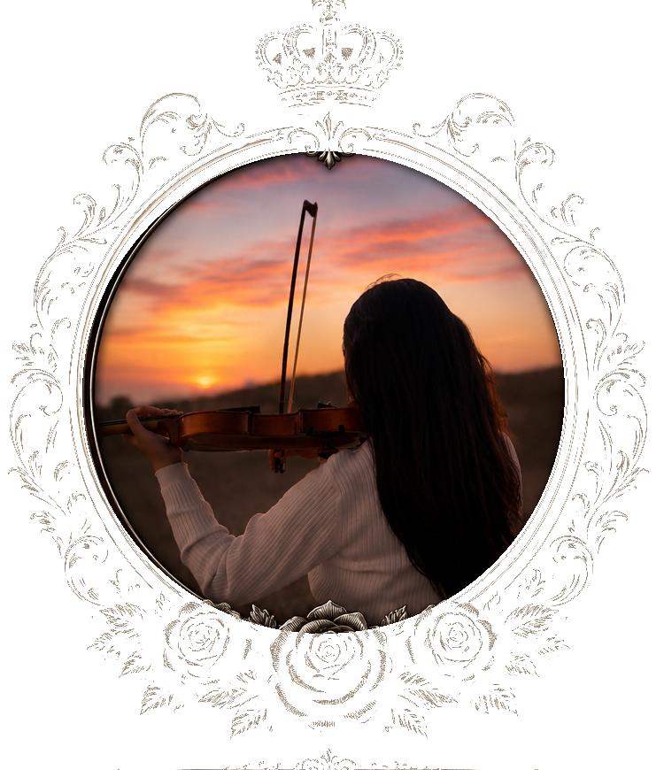

2026
008:05:47:03
Nuestra canción
0:00 / 4:12
2026
Esta es una etapa muy importante para mí, sobre todo en mi vida, y doy gracias a Dios por permitirme llegar hasta aquí. De igual manera, agradezco a mis padres y padrinos por el apoyo y amor incondicional que siempre me han brindado. Por eso, me gustaría celebrar este momento tan importante en compañía de quienes me aprecian y han estado para mí hasta el día de hoy.
¡Espero contar contigo para celebrar esta nueva etapa de mi vida! ★
K.R.B.H.
GALERÍA


HERMANOS
ABUELOS PATERNOS
ABUELOS MATERNOS

MESA DE REGALOS
Tu presencia es el regalo más bonito, pero si deseas obsequiarme algo, puede ser en efectivo en la lluvia de sobres que tengo preparada para el día del evento.

Salmo 17:8
Guárdame como a la niña
de tus ojos;
escóndeme bajo la sombra
de tus días
de tus ojos;
escóndeme bajo la sombra
de tus días
CONFIRMAR ASISTENCIA
Nos encantaría contar contigo. Confirma tu asistencia dándole click al botón: